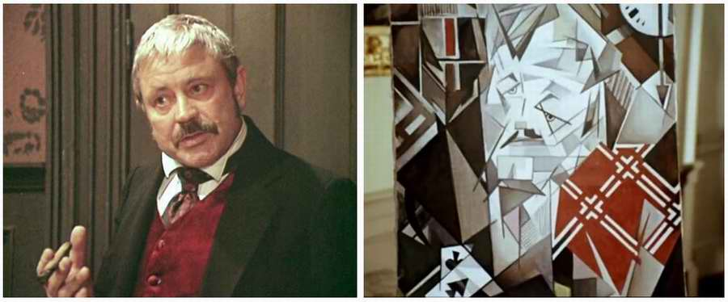

РАЗНЫЕ ПОНИМАНИЯ
Обычно, когда я выступаю с арт-мидрашами, свой рассказ я предваряю замечанием: «Все, о чем я буду говорить – не есть истина, но попытка размышлять об истине в стремлении приблизиться к ней.
Я понимаю так: ИСТИНА, как она есть, содержится в БИБЛИИ на древнееврейском языке.
Все остальное – это наши понимания, интерпретации, версии и т.п. Мы понимаем, что даже наше чтение вслух - уже интерпретация: можно интонацией расставить «свои» знаки препинания, тем более, в оригинально еврейском тексте нет ни заглавных букв, ни пунктуации, что может изменить смысл. Понижение и возвышение нашего голоса и т.п.
Тем более, рассуждение над текстом и высказывание своих мыслей есть интерпретация текста, не претендующая на истинность. Это наше личное, субъективное понимание. Так что очень важно добавлять здесь: «Я ТАК ПОНИМАЮ. Это только мое личное понимание".
И в лучшем случае наше понимание как-то приближается к истине, но не есть сама истина. Это в лучшем случае!! В чем-то наше восприятие священных текстов подобно мерцающему свету и искусству импрессионистов.

Наше понимание может приоткрыть дверцу в размышлении над какой-то маленькой частью истины. Ведь истина гораздо больше понимания конкретного человека, общины, деноминации и т.п.
Это верно в силу определения. Если бы мы предположили, что у Бога есть мозги, они в любом случае больше наших. И Его мысли в нашем разуме просто не умещаются.
«Мои мысли - не ваши мысли, ни ваши пути - пути Мои, говорит Господь. Но как небо выше земли, так пути Мои выше путей ваших, и мысли Мои выше мыслей ваших. (Ис.55:8-9)
«Теперь мы видим как бы сквозь [тусклое] стекло, ГАДАТЕЛЬНО,... теперь знаю я отчасти, а тогда познаю, подобно как я познан». (1Кор.13:12)
Мы не можем претендовать на обладание всей полнотой истины, но только отдельных ее пазлов и при том – ГАДАТЕЛЬНО (1Кор.13:12).

Мы можем бесконечно приближаться к истине. И, думаю, очень важно, чтобы мы делились друг с другом нашими откровениями и нашим пониманием текста. Это ответственность каждого из нас. В том числе художников, поскольку каждый из нас имеет уникальный набор инструментов для исследования и поиска истины: возможностей, способностей, талантов. Так откровение, получаемое художником посредством его творчества, - уникально. То, как прочитает Библию музыкант, например, - юрист никогда не сможет прочитать. В свою очередь кулинар прочитает ее великие тексты не так, как поэт или бизнесмен, или агроном.
Если мы будем делиться той малой частью откровения истины с другим, а этот другой поделится с нами, то сектор нашего восприятия и понимания расширится. Т.е., чем больше у нас будет разных пониманий, тем больше мы будем иметь возможности приблизиться к познанию истины, и тем более мы будем приближаться к ней.

Нередко мы читаем текст Писания и понимаем его по-разному. И каждый настаивает на своем прочтении. Часть нашего понимания мы канонизируем и стремимся оформить в виде жестких формул, не допускающих двоемыслие.
Среднестатистический верующий не любит «разные» понимания. Это мешает ему жить «спокойно». «Скажите, как правильно, и не морочьте мне голову!»
Когда человек знает, что именно его понимание, его точка зрения – единственно правильная, - это значит, что все остальное, другие взгляды – не верны и не есть истина.
Канонизируя определенное понимание, даже если оно было действительно верным на то время и для тех обстоятельств, мы ограничиваем себя. Кто-то из великих сказал: «Часть истины, выдающая себя за всю истину – есть ложь». Т.е. ограниченная истина превращается в ложь.

Когда мы прочитываем текст Библии и имеем о нем свою версию понимания, но при этом допускаем наличие и других версий, даже если они нам не нравятся и мы с ними не согласны; когда мы принимаем возможность наличия нескольких мнений, кроме нашего, это значит, что мы - НЕ ОБЛАДАТЕЛИ ИСТИНЫ в последней инстанции. Действительно, вся истина принадлежит только Богу. И если мы стремимся познать истину и приблизиться к ней, это зависит от наших отношений с Творцом и наших отношений с ближним, то как мы принимаем его и его мнение.
Закончить этот пост хочу словами филолога С.С. Аверинцева, каждый раз завершавшего свои лекции словами «...А МОЖЕТ БЫТЬ, ВСЕ СОВСЕМ НАОБОРОТ».
автор: Эфраим Калиш /TORAART/